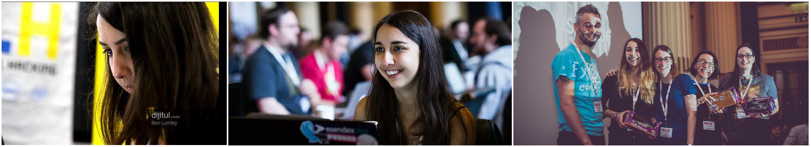
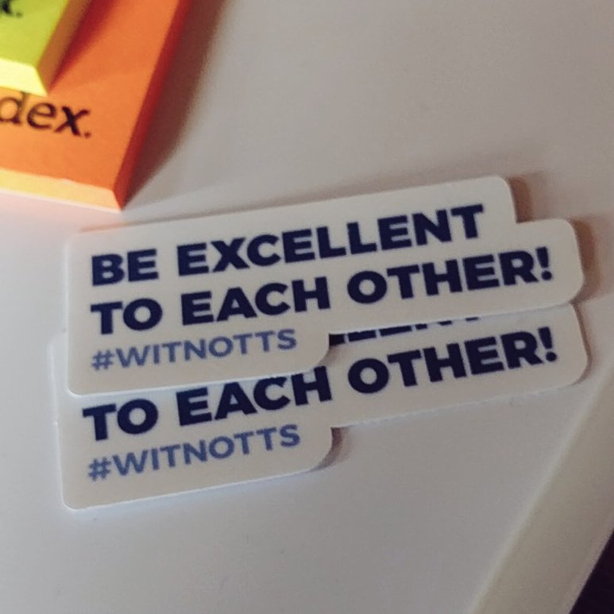
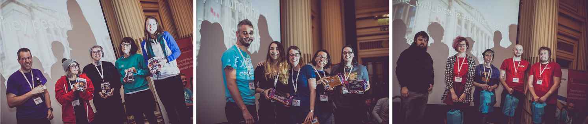

Hack24 '17, The Greatest Place On Earth
A summary of Hack24 2017. Also, a love letter to Hack24.
My Tech Life and Tech Notts.
Tech Nottingham, Hack24 and the people involved are incredibly close to my heart. Moreton (my taller half) took me to Tech Nottingham before I even started my Computer Science course. I think this was partly to get me inspired but also so that I could meet people and the tech world didn’t feel so daunting and scary.
Soon after that I was attending the first Hack24. It’s strange to think my life in tech has been pretty much documented by Hack24 photos.

Even what is now a massive part of my life, Women In Tech Nottingham (WITNOTTS), would not have happened if it weren’t for the Sewards. Andrew is the one who talked me into creating a safe space to encourage more people into the social part of our fine tech community.
Talking of, just under a year ago I did an interview with Jonathan on Twine Radio talking about the plans I had for it at the time. I stated that I wanted the group to have a presence at Hack24 in 2017. At the time I had no idea that this could be a real possibility, it was a pipe dream.
I think that brings us nicely to this years hack…
Hack24 2017
So we fast forward to last weekend. WITNOTTS is no longer a solo burden of love, but I now have Helen Clark. Helen has been an absolute god send over the last few months. We have both grown up with Hack24, coming on leaps and bounds over the last 3 years. We both love the Tech Nottingham community and do our best to get more people involved. She really drives a lot of the work we do.
We mentioned to Hack24 that we wanted to bring a team of our member to the event and they very kindly donated 8 tickets to WITNOTTS for this year. Enough for two whole teams.
Team Wild Garlic, Basil, Olive Oil, Pine Nuts & a Pinch of Salt & Pepper: Amy Dickens, Maria Digregorio, Bety Mehide & Alexa Spors
Team Totally Triumphant Bodacious Babes: Helen Clark, Elsa, Jessica White & Laura Rossi
Both teams came to the event with the aim of having fun. It’s safe to say we achieved that! The ladies were fully supportive of each other constantly making sure that the others were doing okay and having a laugh. Even if many of Elsa’s laughs were directed at the face I make when I’m concentrating. (Don’t worry Elsa - I still think you are awesome!)

The WITNOTTS Code of Conduct is based off the classic Bill and Ted quote “Be Excellent To Each Other”. I could not be prouder of our members and how much they live and breathe this ethic. We helped each other. We helped others. We had a good time and made sure everyone around us was having a good time too. The rest of Nottingham must have a similar ethic as our stickers disappeared quickly.
A lot happened while we were coding. If I were to cover it all this would become a novel. In summary - the hot chocolate was addictive, the company couldn’t have been better and the volunteers are world class. If you haven’t done Hack24 before, you should sign up for next year. In my three years I have joined a group of strangers, gone with a group organised at work and, this year, gone with people I wanted to get to know better. Every year I have managed to make new friends, learn and laugh.
Finally the air horn sounded and it was time to make our videos. Luckily, Helen is a video queen! Helen, Laura and Elsa set up a story board and plan (this was while I was doing some last minute code pre-airhorn). They decided that we should use our app as a means of showing what it was all about, which meant running around Nottingham doing bonkers things and tweeting about it. If it hasn’t been removed yet you can view Team Totally Triumphant Bodacious Babes entry here:
After the video had been submitted we had a couple of hours to waste while the judging was done. We then met up again for the awards ceremony.
The Results
All in all not only did the WITNOTTS teams do well, but some teams containing our members did as well!
- Team Wild Garlic, Basil, Olive Oil, Pine Nuts & a Pinch of Salt & Pepper won two challenges: Esendex and Packed Pixels.
- Team Totally Triumphant Bodacious Babes came second in the Cronofy challenge
- WITNOTTS members Samathy and Alex’s team won the Unidays challenge

I’m not going to lie - I was ECSTATIC that we won something. I couldn’t stop giggling for a long time afterwards purely due to the shock. Add on to the fact it was a model Delorean… well anyone who has been to WITNOTTS or seen me talk knows how much I love a good ol’ cult film reference. I don’t think any of us expected to get a prize so after all our toil, we were overjoyed to have won something.
The best result in my opinion though is that we had ladies in our teams that hadn’t been to many tech events and for which this was their first Hack.
Not only are they planning to go to Hack24 2018, but have also been asking about other events in Nottingham and have been inspired to complete tech related projects. Getting people inspired by tech and to join in with the greater tech community is what makes all this worthwhile. Bringing more people into it, strengthening it & making it thrive.
Thank you Tech Nottingham for building a welcoming tech family.
Other Hack24 Blogs:
- Helen Clark - Being excellent to each other at Hack24
- Emma Seward - Hack24 2017: Big dreams, big hacks, big weekend
- Matt Brunt - HACK 24: 2017 LIVE BLOG